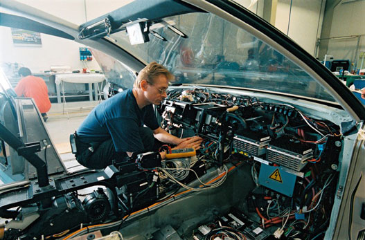

Tantárgy feladata és célja: Megismertetni a személygépkocsi villamos berendezéseinek működési alapjait tekintettel az elektronikai eszközök széleskörű alkalmazására. Tárgy tematikus leírása: A gépkocsi villamos hálózatának elvi felépítése, akkumulátor-generátor-fogyasztók rendszerének energia egyensúlya, követelmények, kapcsolási rajzok. Multiplex kommunikációs hálózat. Indító akkumulátorok felépítése, jellemzői, töltése. Karbantartásmentes akkumulátorok. Generátorok felépítése, működése, jellemzői. Feszültség szabályozás. Indítómotorok felépítése, működése, jellemzői. Tekercses és kondenzátoros gyújtóberendezések felépítése, működése, jellemzői. Katalizátor. Oxigén-szonda. Benzinbefecskendező rendszerek felépítése, működése, jellemzői. Diesel-befecskendező rendszerek. Részecske-szűrők. Biztonsági rendszerek, a gépjármű világítása.
